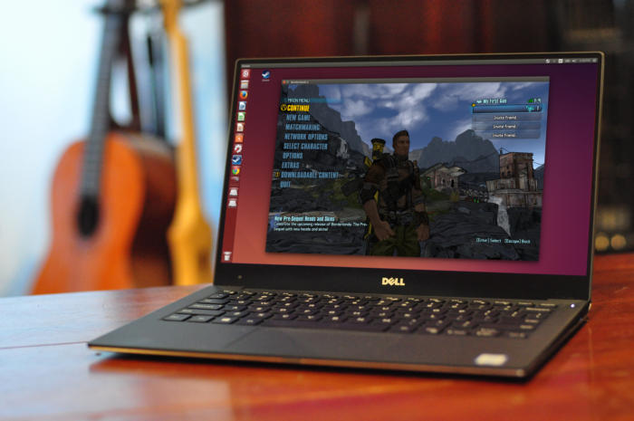
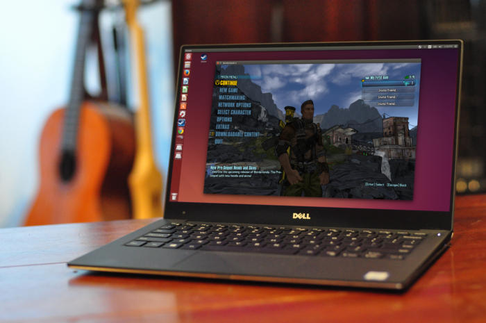
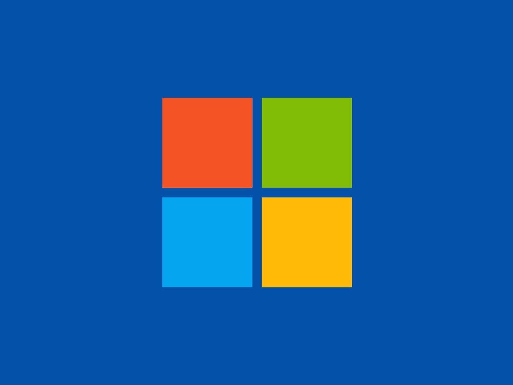
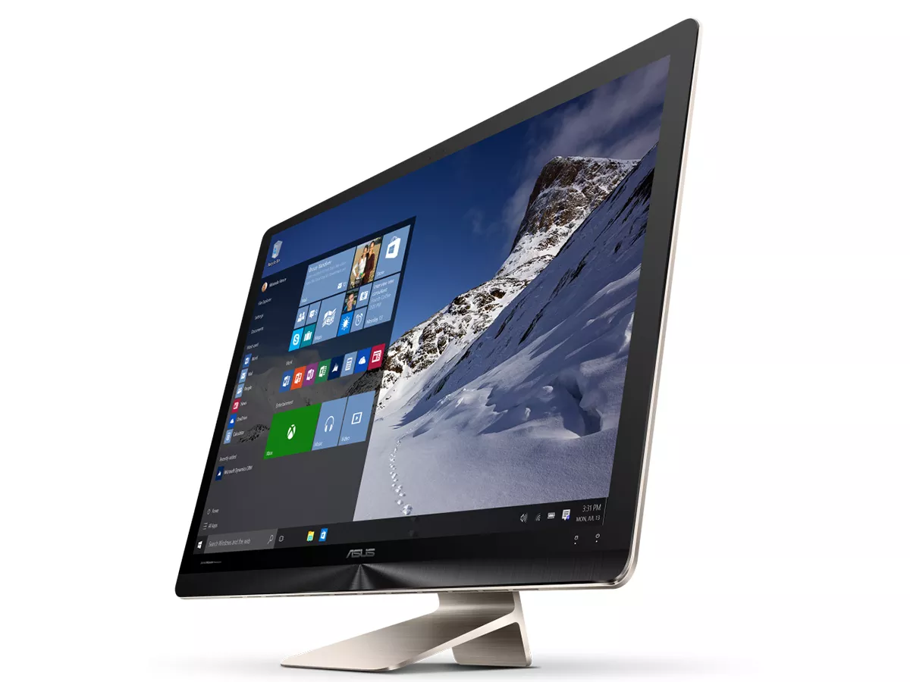
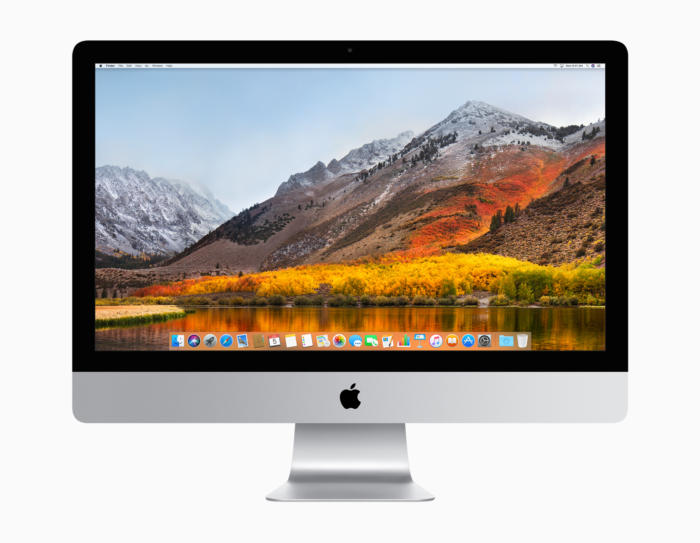

What is Linux?
Just like Windows XP, Windows 7, Windows 8, and Mac OS X, Linux is an operating system. An operating system is software that manages all of the hardware resources associated with your desktop or laptop. To put it simply – the operating system manages the communication between your software and your hardware. Without the operating system (often referred to as the “OS”), the software wouldn’t function.
The OS is comprised of a number of pieces:
The Bootloader: The software that manages the boot process of your computer. For most users, this will simply be a splash screen that pops up and eventually goes away to boot into the operating system.
The kernel: This is the one piece of the whole that is actually called “Linux”. The kernel is the core of the system and manages the CPU, memory, and peripheral devices. The kernel is the “lowest” level of the OS.
Daemons: These are background services (printing, sound, scheduling, etc) that either start up during boot, or after you log into the desktop.
The Shell: You’ve probably heard mention of the Linux command line. This is the shell – a command process that allows you to control the computer via commands typed into a text interface. This is what, at one time, scared people away from Linux the most (assuming they had to learn a seemingly archaic command line structure to make Linux work). This is no longer the case. With modern desktop Linux, there is no need to ever touch the command line.
Graphical Server: This is the sub-system that displays the graphics on your monitor. It is commonly referred to as the X server or just “X”.
Desktop Environment: This is the piece of the puzzle that the users actually interact with. There are many desktop environments to choose from (Unity, GNOME, Cinnamon, Enlightenment, KDE, XFCE, etc). Each desktop environment includes built-in applications (such as file managers, configuration tools, web browsers, games, etc).
Applications: Desktop environments do not offer the full array of apps. Just like Windows and Mac, Linux offers thousands upon thousands of high-quality software titles that can be easily found and installed. Most modern Linux distributions (more on this in a moment) include App Store-like tools that centralize and simplify application installation. For example: Ubuntu Linux has the Ubuntu Software Center (Figure 1) which allows you to quickly search among the thousands of apps and install them from one centralized location.

What is Linux?
Just like Windows XP, Windows 7, Windows 8, and Mac OS X, Linux is an operating system. An operating system is software that manages all of the hardware resources associated with your desktop or laptop. To put it simply – the operating system manages the communication between your software and your hardware. Without the operating system (often referred to as the “OS”), the software wouldn’t function.
The OS is comprised of a number of pieces:
The Bootloader: The software that manages the boot process of your computer. For most users, this will simply be a splash screen that pops up and eventually goes away to boot into the operating system.
The kernel: This is the one piece of the whole that is actually called “Linux”. The kernel is the core of the system and manages the CPU, memory, and peripheral devices. The kernel is the “lowest” level of the OS.
Daemons: These are background services (printing, sound, scheduling, etc) that either start up during boot, or after you log into the desktop.
The Shell: You’ve probably heard mention of the Linux command line. This is the shell – a command process that allows you to control the computer via commands typed into a text interface. This is what, at one time, scared people away from Linux the most (assuming they had to learn a seemingly archaic command line structure to make Linux work). This is no longer the case. With modern desktop Linux, there is no need to ever touch the command line.
Graphical Server: This is the sub-system that displays the graphics on your monitor. It is commonly referred to as the X server or just “X”.
Desktop Environment: This is the piece of the puzzle that the users actually interact with. There are many desktop environments to choose from (Unity, GNOME, Cinnamon, Enlightenment, KDE, XFCE, etc). Each desktop environment includes built-in applications (such as file managers, configuration tools, web browsers, games, etc).
Applications: Desktop environments do not offer the full array of apps. Just like Windows and Mac, Linux offers thousands upon thousands of high-quality software titles that can be easily found and installed. Most modern Linux distributions (more on this in a moment) include App Store-like tools that centralize and simplify application installation. For example: Ubuntu Linux has the Ubuntu Software Center (Figure 1) which allows you to quickly search among the thousands of apps and install them from one centralized location.
WINDOWS

Microsoft Windows is a group of several graphical operating system families, all of which are developed, marketed, and sold by Microsoft. Each family caters to a certain sector of the computing industry. Active Windows families include Windows NT and Windows Embedded; these may encompass subfamilies, e.g. Windows Embedded Compact (Windows CE) or Windows Server. Defunct Windows families include Windows 9x, Windows Mobile and Windows Phone.
Microsoft introduced an operating environment named Windows on November 20, 1985, as a graphical operating system shell for MS-DOS in response to the growing interest in graphical user interfaces (GUIs).[3] Microsoft Windows came to dominate the world's personal computer (PC) market with over 90% market share, overtaking Mac OS, which had been introduced in 1984. Apple came to see Windows as an unfair encroachment on their innovation in GUI development as implemented on products such as the Lisa and Macintosh (eventually settled in court in Microsoft's favor in 1993). On PCs, Windows is still the most popular operating system. However, in 2014, Microsoft admitted losing the majority of the overall operating system market to Android,[4] because of the massive growth in sales of Android smartphones. In 2014, the number of Windows devices sold was less than 25% that of Android devices sold. This comparison however may not be fully relevant, as the two operating systems traditionally target different platforms. Still, numbers for server use of Windows (that are comparable to competitors) show one third market share, similar to that for end user use.
MAC OS
 macOS is the second major series of Macintosh operating systems. The first is colloquially called the "classic" Mac OS, which was introduced in 1984, and the final release of which was Mac OS 9 in 1999. The first desktop version, Mac OS X 10.0, was released in March 2001, with its first update, 10.1, arriving later that year. After this, Apple began naming its releases after big cats, which lasted until OS X 10.8 Mountain Lion. Since OS X 10.9 Mavericks, releases have been named after locations in California.[11] Apple shortened the name to "OS X" in 2012 and then changed it to "macOS" in 2016, adopting the nomenclature that they were using for their other operating systems, iOS, watchOS, and tvOS. The latest version is macOS Mojave, which was publicly released in September 2018.
Between 1999 and 2009, Apple sold a separate series of operating systems called Mac OS X Server. The initial version, Mac OS X Server 1.0, was released in 1999 with a user interface similar to Mac OS 8.5. After this, new versions were introduced concurrently with the desktop version of Mac OS X. Beginning with Mac OS X 10.7 Lion, the server functions were made available as a separate package on the Mac App Store.[12]
macOS is based on technologies developed between 1985 and 1997 at NeXT, a company that Apple co-founder Steve Jobs created after leaving the company. The "X" in Mac OS X and OS X is the Roman numeral for the number 10 and is pronounced as such. The X was a prominent part of the operating system's brand identity and marketing in its early years, but gradually receded in prominence since the release of Snow Leopard in 2009. UNIX 03 certification was achieved for the Intel version of Mac OS X 10.5 Leopard[13] and all releases from Mac OS X 10.6 Snow Leopard up to the current version also have UNIX 03 certification.[14][15][16][17][18][19][20][21][22] macOS shares its Unix-based core, named Darwin, and many of its frameworks with iOS,[23] tvOS and watchOS. A heavily modified version of Mac OS X 10.4 Tiger was used for the first-generation Apple TV.[24]
Releases of Mac OS X from 1999 to 2005 can run only on the PowerPC-based Macs from that time period. After Apple announced that they were switching to Intel CPUs from 2006 onwards, a separate version of Mac OS X 10.4 Tiger was made and distributed exclusively with early Intel-based Macs; it included an emulator known as Rosetta, which allowed users to run most PowerPC applications on Intel-based Macs. Mac OS X 10.5 Leopard was the sole release to be built as a universal binary, meaning that the installer disc supported both Intel and PowerPC processors. Mac OS X 10.6 Snow Leopard was the first release to be available exclusively for Intel-based Macs. In 2011, Apple released Mac OS X 10.7 Lion, which no longer supported 32-bit Intel processors and also did not include Rosetta. All versions of the system released since then run exclusively on 64-bit Intel CPUs and do not support PowerPC applications.
macOS is the second major series of Macintosh operating systems. The first is colloquially called the "classic" Mac OS, which was introduced in 1984, and the final release of which was Mac OS 9 in 1999. The first desktop version, Mac OS X 10.0, was released in March 2001, with its first update, 10.1, arriving later that year. After this, Apple began naming its releases after big cats, which lasted until OS X 10.8 Mountain Lion. Since OS X 10.9 Mavericks, releases have been named after locations in California.[11] Apple shortened the name to "OS X" in 2012 and then changed it to "macOS" in 2016, adopting the nomenclature that they were using for their other operating systems, iOS, watchOS, and tvOS. The latest version is macOS Mojave, which was publicly released in September 2018.
Between 1999 and 2009, Apple sold a separate series of operating systems called Mac OS X Server. The initial version, Mac OS X Server 1.0, was released in 1999 with a user interface similar to Mac OS 8.5. After this, new versions were introduced concurrently with the desktop version of Mac OS X. Beginning with Mac OS X 10.7 Lion, the server functions were made available as a separate package on the Mac App Store.[12]
macOS is based on technologies developed between 1985 and 1997 at NeXT, a company that Apple co-founder Steve Jobs created after leaving the company. The "X" in Mac OS X and OS X is the Roman numeral for the number 10 and is pronounced as such. The X was a prominent part of the operating system's brand identity and marketing in its early years, but gradually receded in prominence since the release of Snow Leopard in 2009. UNIX 03 certification was achieved for the Intel version of Mac OS X 10.5 Leopard[13] and all releases from Mac OS X 10.6 Snow Leopard up to the current version also have UNIX 03 certification.[14][15][16][17][18][19][20][21][22] macOS shares its Unix-based core, named Darwin, and many of its frameworks with iOS,[23] tvOS and watchOS. A heavily modified version of Mac OS X 10.4 Tiger was used for the first-generation Apple TV.[24]
Releases of Mac OS X from 1999 to 2005 can run only on the PowerPC-based Macs from that time period. After Apple announced that they were switching to Intel CPUs from 2006 onwards, a separate version of Mac OS X 10.4 Tiger was made and distributed exclusively with early Intel-based Macs; it included an emulator known as Rosetta, which allowed users to run most PowerPC applications on Intel-based Macs. Mac OS X 10.5 Leopard was the sole release to be built as a universal binary, meaning that the installer disc supported both Intel and PowerPC processors. Mac OS X 10.6 Snow Leopard was the first release to be available exclusively for Intel-based Macs. In 2011, Apple released Mac OS X 10.7 Lion, which no longer supported 32-bit Intel processors and also did not include Rosetta. All versions of the system released since then run exclusively on 64-bit Intel CPUs and do not support PowerPC applications.